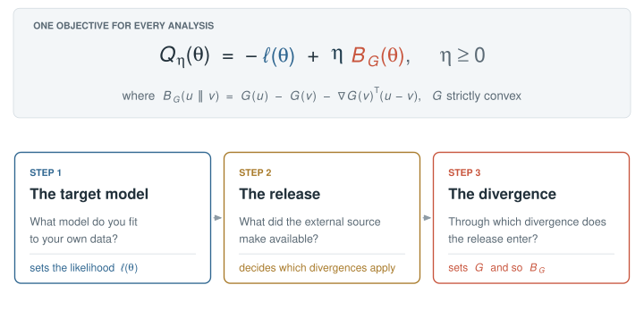
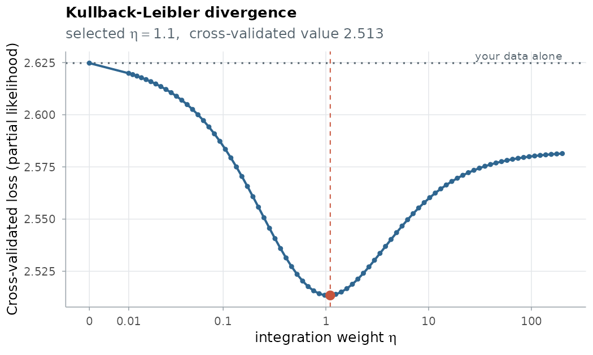

Transfer learning for time-to-event models, through one Bregman-divergence objective.
You fit a survival model to your own cohort, and an external source has more data: another cohort’s records, a published model, a risk score, a registry’s survival probabilities. Borrowing from it can make your estimates far more precise; borrowing blindly can make them worse, because the external population is never quite yours. BregSurv borrows as far as it helps your data, and no further.
One call
Every analysis is one call with three ingredients: the target model you fit, the release the external source published, and the divergence through which the release enters. cv.bregsurv() then chooses how strongly to borrow, by cross-validation on your data.
cv.bregsurv(target, release, divergence, ...)
The objective, and the three steps that set its terms: the target model, the release and the divergence.
-
The target is the model you fit to your own data; it sets the likelihood \(\ell(\theta)\). Build it with
target_cox()(a follow-up time and an event indicator, with strata and tied times),target_ncc()(a nested case–control design) ortarget_discrete()(follow-up recorded in intervals). -
The release is what the external source made available: individual records (
release_records()), a fitted model with or without its uncertainty (release_coef()), a risk score without survival probabilities (release_score()), or survival probabilities (release_model()). -
The divergence is how the release enters the objective, \(B_G\):
"kl"(Kullback–Leibler),"mahalanobis"or"composite"(composite likelihood).
A first fit
A cohort of 100 patients, and a published model fitted on two of their six covariates:
library(BregSurv)
data(ExampleData_lowdim)
tr <- ExampleData_lowdim$train
target <- target_cox(time = tr$time, event = tr$status, z = tr$z)
release <- release_coef(ExampleData_lowdim$beta_external_poor)
fit <- cv.bregsurv(target, release, divergence = "kl")
own <- cv.bregsurv(target) # your data alone
round(c(your_data_alone = own$value, kullback_leibler = fit$value), 3) # cross-validated loss
#> your_data_alone kullback_leibler
#> 2.625 2.513
plot(fit)
The cross-validated loss along the integration weight: the curve falls below the line of your data alone and reaches its minimum near eta = 1.
The cross-validated loss falls below that of your data alone: borrowing from the published model predicts your patients better than your data on their own. The same call fits a nested case–control design or a discrete-time model, with a ridge, lasso or elastic-net penalty, or with a neural-network risk score.
Installation
Not yet on CRAN. Install from GitHub:
# install.packages("remotes")
remotes::install_github("UM-KevinHe/BregSurv")BregSurv requires R ≥ 4.0 and a C++17 compiler; neural-network targets also need the torch package.
Learn more
- Get started: the target, the release and the divergence, step by step, with examples.
- The framework: the objective, and why each release supports the divergences it does.
- Discrete-time and neural targets.
- The estimators behind each divergence, with all their options.
- Function reference.
-
llms.txt: a compact map of the package for AI coding assistants.